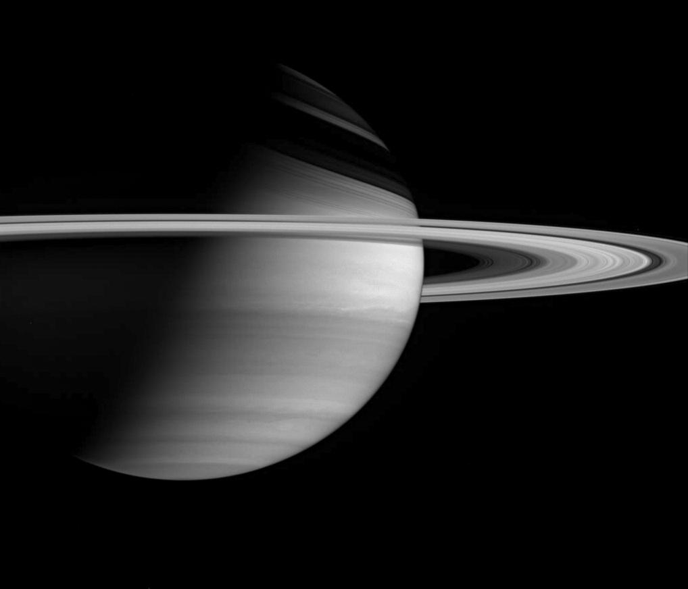
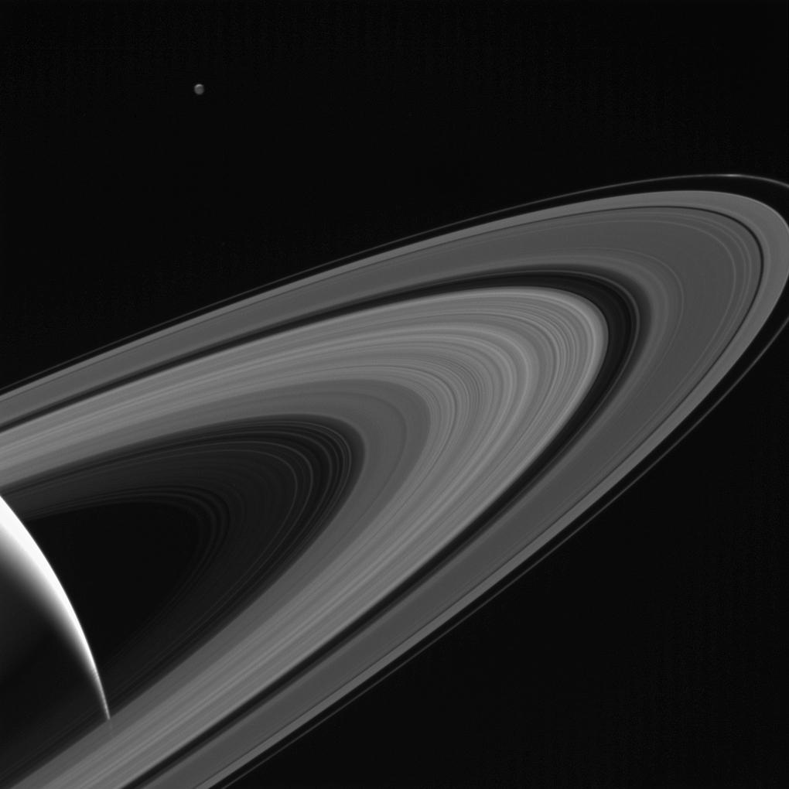
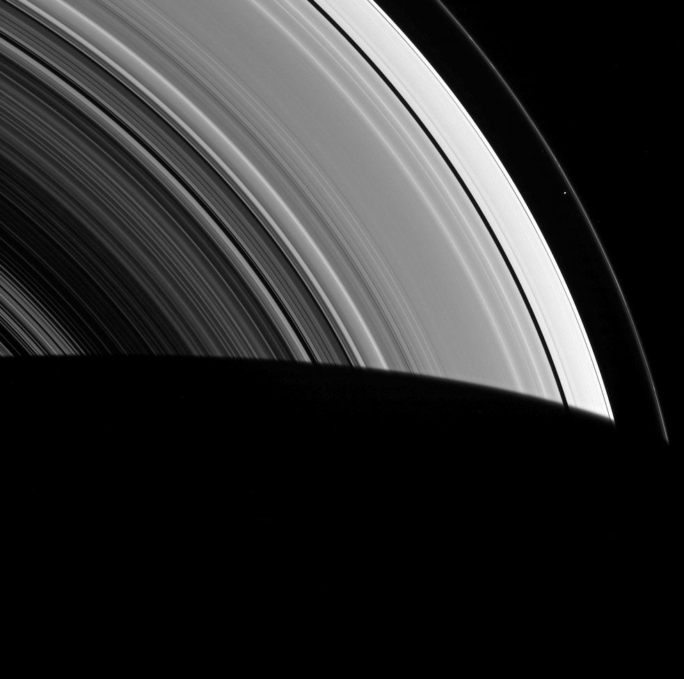
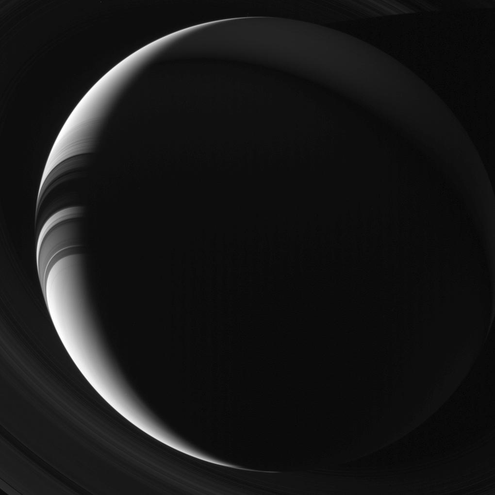
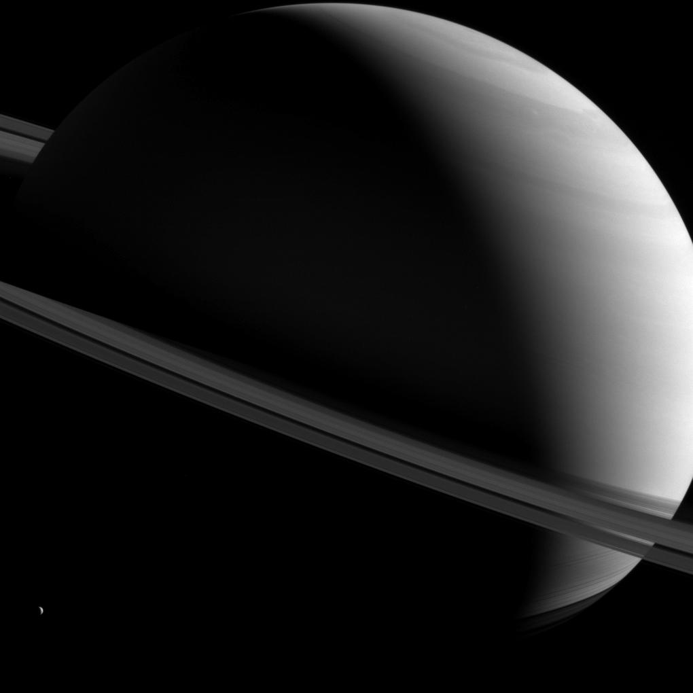
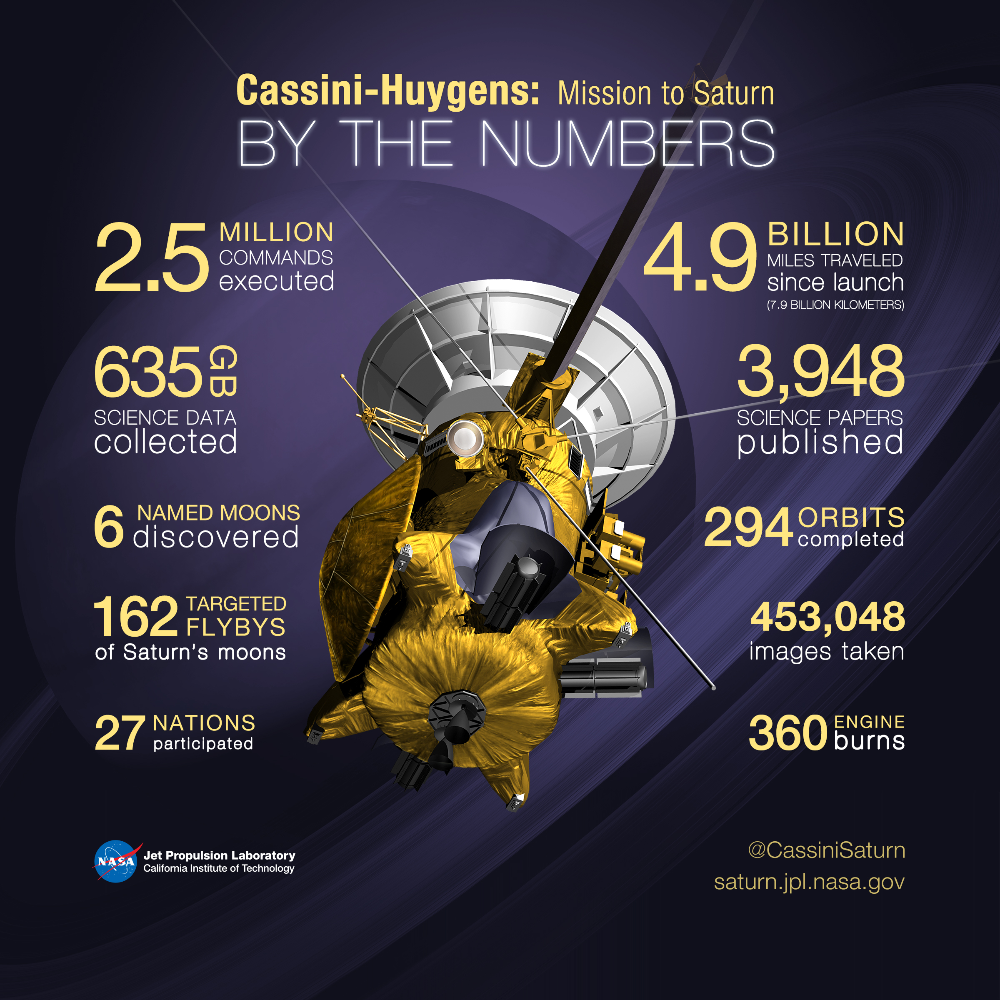

Imagens Reais de Saturno

Imagen real de saturno a imagem foi tirada com a câmera grande angular da sonda Cassini em 23 de
janeiro de 2005...
A missão responsavel por essa majestosa imagem é a A missão Cassini-Huygens é um projeto cooperativo
da NASA, da Agência Espacial Europeia e da Agência Espacial Italiana

A Cassini da NASA olha através dos anéis gelados de Saturno em direção à lua gelada Tétis, cujo lado
noturno é iluminado por Saturno, ou luz solar refletida pelo planeta.
Tétis estava do outro lado de Saturno em relação a Cassini aqui; um observador olhando para cima da
superfície da lua em direção a Cassini veria o disco iluminado de Saturno enchendo o céu.
Tétis foi iluminado por um fator de dois nesta imagem para aumentar sua visibilidade. Uma lasca do
hemisfério norte iluminado pelo sol da Lua é vista no topo. Uma cunha brilhante do lado iluminado
pelo sol de Saturno é vista no canto inferior esquerdo.
Esta vista olha para o lado iluminado pelo sol dos anéis a cerca de 10 graus acima do plano do anel.
A imagem foi tirada em luz visível com a câmera grande angular da sonda Cassini em 13 de maio de
2017.

Visto pela sonda Cassini da NASA dentro da vasta extensão de anéis de Saturno, Prometheus aparece
como pouco mais do que um ponto. Mas essa pequena lua ainda consegue moldar o anel F, confinando-o
ao seu estreito domínio.
Prometheus (53 milhas, ou 86 quilômetros de diâmetro) e sua companheira lua Pandora (50 milhas, ou
81 quilômetros de diâmetro) orbitam ao lado do anel F e impedem que o anel se espalhe para fora
através de um processo apelidado de "pastoreio".
Esta visão olha para o lado não iluminado dos anéis a partir de cerca de 45 graus abaixo do plano do
anel. A imagem foi tirada em luz verde com a câmera grande angular da sonda Cassini em 8 de março de
2014.
A visão foi obtida a uma distância de aproximadamente 533.000 milhas (858.000 quilômetros) de
Prometheus e em um ângulo de fase de 90 graus. A escala da imagem é de 32 milhas (51 quilômetros)
por pixel.

Saturno aparece para as câmeras Cassini da NASA como um crescente fino e iluminado pelo sol nesta
visão sobrenatural. Os cidadãos da Terra, estando muito mais perto do Sol do que Saturno, nunca
conseguem desfrutar de uma visão de Saturno como esta sem a ajuda de nossos enviados robôs.
Partes do lado noturno de Saturno mostram iluminação fraca devido à luz refletida dos anéis de volta
para o planeta, um efeito apelidado de "ringshine". Esta visão olha para o lado não iluminado dos
anéis a partir de cerca de 43 graus abaixo do plano do anel. A imagem foi tirada em luz verde com a
câmera grande angular da sonda Cassini em 4 de agosto de 2013.
A visão foi obtida a uma distância de aproximadamente 1,2 milhão de milhas (2 milhões de
quilômetros) de Saturno. A escala da imagem é de 75 milhas (120 quilômetros) por pixel.

A sonda Cassini da NASA capturou esta imagem de Saturno enquanto vê o planeta e seus anéis
expansivos de todos os tipos de ângulos. Aqui, um Saturno semi-iluminado fica torto enquanto a
pequena Dione olha do canto inferior esquerdo.
A despedida

Por mais de uma década, a sonda Cassini da NASA compartilhou as maravilhas de Saturno e sua família
de luas geladas – levando-nos a mundos surpreendentes onde rios de metano correm para um mar de
metano e onde jatos de gelo e gás estão lançando material para o espaço a partir de um oceano de
água líquida que pode abrigar os ingredientes para a vida.
Cassini revelou em grande detalhe as verdadeiras maravilhas de Saturno, um mundo gigante governado
por tempestades furiosas e delicadas harmonias de gravidade.
A Cassini transportou um passageiro para o sistema de Saturno, a sonda europeia Huygens – o primeiro
objeto feito pelo homem a pousar em um mundo no distante sistema solar externo.
Depois de 20 anos no espaço – 13 desses anos explorando Saturno – a Cassini esgotou seu suprimento
de combustível. E assim, para proteger luas de Saturno que poderiam ter condições adequadas para a
vida, a Cassini foi enviada em uma ousada missão final que selaria seu destino. Depois de uma série
de quase duas dúzias de mergulhos roendo as unhas entre o planeta e seus anéis gelados, a Cassini
mergulhou na atmosfera de Saturno em 15 de setembro de 2017, devolvendo dados científicos até o fim.
Alguns números-chave da missão Cassini-Huygens a Saturno.
2,5 milhões de comandos executados.
4,9 bilhões de milhas percorridas desde o lançamento (7,9 bilhões de quilômetros)
635 GB de dados científicos coletados
3.948 artigos científicos publicados
6 luas nomeadas descobertas
294 órbitas concluídas
162 sobrevoos direcionados das luas de Saturno
453.048 imagens tiradas
27 nações participantes
Queima do motor 360